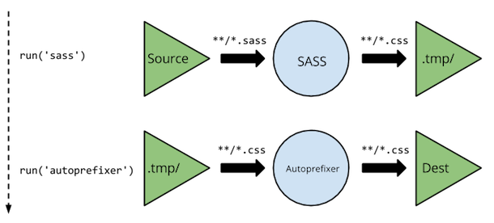

The Front End Stack
A look into modern day build tools for front-end web development.
Grunt & Gulp
The task runners/build tools
Compiling
Minification/Concantenation
Linting
What's the difference?
What's the difference?
Grunt .tmp Folder
I/O is very expensive when compared to in-memory operations. On top of that, Grunt has to compile all the files even if only one has changed, which adds additional build time.
What's the difference?
Gulp Pipes

All Gulp plugins are just through streams that read in data and output data. Everything can be processed in memory, with the output of one stream piped as input to another.
Grunt
grunt.initConfig({
sass: {
dist: {
files: [{
src: 'dev/*.scss',
dest: '.tmp/styles',
expand: true,
ext: '.css'
}]
}
},
autoprefixer: {
dist: {
files: [{
expand: true,
cwd: '.tmp/styles',
src: '{,*/}*.css',
dest: 'css/styles'
}]
}
},
watch: {
styles: {
files: ['dev/*.scss'],
tasks: ['sass:dist', 'autoprefixer:dist']
}
}
});
grunt.registerTask('default', ['styles', 'watch']);
Gulp
gulp.task('sass', function () {
gulp.src('dev/*.scss')
.pipe(sass())
.pipe(autoprefixer())
.pipe(gulp.dest('css/styles'));
});
gulp.task('default', function() {
gulp.run('sass');
gulp.watch('dev/*.scss', function() {
gulp.run('sass');
});
});
Bower & NPM
Dependency Management
Bower
"dependencies": {
"jquery": "~2.1.1",
"bootstrap": "~3.1.1"
}
$ bower install
NPM
"dependencies": {
"express": "~2.5.9",
}
$ npm install
var express = require('express')
var app = express()
app.get('/', function (req, res) {
res.send('Hello World')
})
app.listen(3000)
What's the difference?

NPM for all server-side components and Bower for client-side stuff
What is it?
yo react-webpack
yo react-webpack:component barry //or just: yo react-webpack:c barry
Produces
src/components/Barry.js
'use strict';
var React = require('react/addons');
require('styles/componentName.scss');
var Barry = React.createClass({
render: function () {
return (
Content for Barry
)
}
});
module.exports = Barry;
yo codecoffee